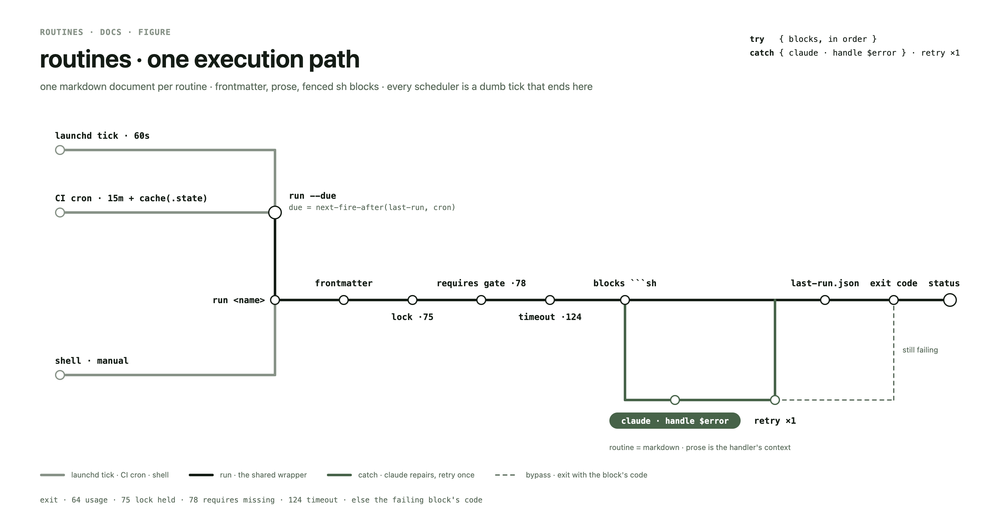
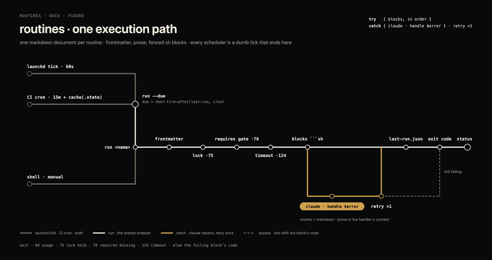

executable markdown on rails
A routine is a single markdown document — frontmatter for schedule,
prose for judgment, fenced sh blocks for mechanics.
bin/routine runs the blocks deterministically; when one
fails, the document itself becomes the prompt: claude receives the error in full
context, repairs state, and the runner retries the block once. Every scheduler —
launchd locally, a CI cron, a human at a shell — is a dumb tick that ends at the
same routine run.
try { blocks, in order } # zero-LLM happy path — cheap, fast, CI-safe
catch { claude("handle $error") } # the doc's prose is the handler's context
Layout — a routines home, and the tool
The documents live in a routines home —
$ROUTINE_HOME, default ~/.routines —
and this repo is only the tool.
~/.routines/<name>.md # the routine: frontmatter + prose + ```sh blocks ~/.routines/.state/<name>/ # lock/, lock.reap/ while reaping, last-run.json, runs.jsonl, logs/<ts>-<pid>.log ~/.routines/.state/tick.log # the sweep's journal — one line per tick bin/routine # the only runner — bash 3.2-safe, zero-dep routines/ # this repo's own routines — the CI convention .github/workflows/routines.yaml # generated by `routine sync-ci` docs/ # this page + its figures
install stamps the absolute path the runner was invoked by, so a checkout's bin/routine — or a symlink into one — ties the tick to that checkout: re-run install after moving the repo, or install from a standalone curl'd copy.ROUTINE_HOMEis the only anchor —ROUTINE_DIR(documents) andROUTINE_STATE(run state) derive from it and are overridable individually;installpins all three into the launchd agent, so re-run it after moving any.- Test seams —
ROUTINE_AGENTS_DIR,ROUTINE_LAUNCHCTL,ROUTINE_CLAUDE,ROUTINE_NOW, andROUTINE_PMSETredirect launchd, claude, the clock, and the dark-wake probe — the seams the test suite runs through.
The document — $ROUTINE_HOME/<name>.md
Documents and run state live in a routines home —
$ROUTINE_HOME, default ~/.routines,
with state under its .state/; this repo is only the tool,
so personal routines never enter it and the runner can move without breaking launchd.
One file per routine. Frontmatter is flat
key: value, parsed with awk — no yq, no yaml library;
one pair of surrounding quotes is stripped; CRLF, trailing blanks and a leading BOM tolerated.
Only sh / bash fences execute,
sequentially, each under bash -e; other fences are
material for the prose. Fences follow CommonMark (``` or
~~~, 3+ long, indent 0–3 stripped, closed only by the same
character at least as long); a fence inside an HTML comment is disabled. A block that needs an asset writes or references
sibling paths.
--- schedule: 30 7 * * 1-5 # 5-field cron, evaluated in UTC; omit ⇒ on-demand only timeout: 600 # seconds for the whole routine requires: GITHUB_TOKEN # env vars that must be non-empty in the environment on_error: claude # claude (default) | fail; else exit 64 --- # Morning brief Prose is not decoration — it is the context the error-handler inherits: intent, traps, judgment calls. Write it for the agent that arrives when a block below has just failed. ```sh gh api notifications --paginate > "$ROUTINE_STATE_DIR/inbox.json" ``` ```sh claude -p "summarize inbox.json …" # a block may itself call claude — an agent step on rails ```
try / catch — the failure contract
The happy path never calls a model. The document is the handler's context precisely because it was written before anything broke.
- blocks run in order; each block's output is appended to the run log under a block delimiter
- each block's exit code is the truth — nothing interprets it
on_error: claude- the runner invokes
claude --model opus --permission-mode=auto --no-session-persistence -pwith the prompt on stdin (never argv — a large document passes ARG_MAX): the full document, the failing block, and its captured output, each section between markers carrying the run's random suffix so output cannot forge its end, cwd = the routines home, env carryingROUTINE_NAME,ROUTINE_STATE_DIRandROUTINE_HOMEas the blocks see them - instruction: running unattended; diagnose and repair state; do not continue the routine yourself
- never start a final-message line with
needs input:orfailed:— the Stop hook would open an unkeyed thread per run — but use the stable thread key the document names
- the runner re-executes the failing block once — pass ⇒ continue to the next block; fail ⇒ the routine exits with that block's code
- one repair attempt per block, no loops
- no claude binary, or no credentials (
claude auth statusexits 1 — bare CI) ⇒ behaves ason_error: fail, with the reason logged; credentials are never verified, so a bad or expired one still runs the catch, and its failed agent stamps thedegradedmarker that a repair which ran clears
- The agent never steers control flow — the deterministic retry is the verdict, never the agent's exit code.
Due-ness — derived, never matched
A routine is due when
next-fire-after(last started run, schedule) ≤ now; a
missing last-run.json, or one stamped ahead of the clock (a stepped clock), means due. Cron evaluates in UTC —
one clock for launchd, CI, and the shell.
| one evaluator buys | why |
|---|---|
| CI correctness under delayed or skipped ticks | compare against the last run, not "does now match the expr" |
| launchd catch-up after sleep | free — the same comparison, no wake hook |
routine run --due as the universal entry | every scheduler is a dumb tick |
next-fire-after
walks days forward from the last run, dates by arithmetic, never a fork (horizon
eight years, so Feb 29 recurs; dead months skip to their 28th) — dumb, correct, sub-second. Day-of-month and
day-of-week follow cronie: OR when both are restricted, AND when either opens with
* (*/2 included).
Schedulers are dumb ticks
Neither scheduler knows a routine's schedule. Both wake up, ask the one evaluator what is due, and exit.
dev.gigantic.routines.dueroutine installrenders one agent;routine uninstallboots it out; install retires the pre-2026-10-20com.routines.dueagent firstStartInterval60 +RunAtLoadtrue, running/bin/bash -lc "exec <runner> run --due"withPATHand theROUTINE_HOME/ROUTINE_DIR/ROUTINE_STATEanchors stamped (XML-escaped) — nocd, the runner enters the routines home itselfRunAtLoadfires once at load — bootstrap and login; after a sleep the firstStartIntervalfire (those due while asleep are missed, launchd.plist(5)) runs--due, and derived due-ness catches up whatever fell due
routine sync-ciemits.github/workflows/routines.yamlinto the repo it is invoked in- cron every 15 min +
workflow_dispatch, one tick at a time (aconcurrencygroup: runners share no lock);ROUTINE_HOME= that repo'sroutines/dir, restoreroutines/.statefromactions/cache, fetchbin/routineif absent,run --due, save cache - the save runs under
if: always()—actions/cachesaves only on success, so one red routine would roll back every other routine's state - each tick saves a new key, so once this run's key is listed (a failed save still exits 0) every older
routines-state-entry on the same ref is deleted (gh cache delete,actions: write) - every action is pinned by commit and checkout persists no token (
persist-credentials: false): a moved tag cannot run under the job's token, and no block reads it from.git/config— a block that needs git auth brings its own - cache eviction just makes everything due once — the idempotency contract absorbs it
routine run frontmatter → lock (mkdir .state/<name>/lock, pid and its start time inside; live pid ⇒ 75, dead ⇒ reap, reused (its UTC start time differs, where ps can read it) ⇒ reap, no pid ⇒ held for a minute; no lock age frees a live pid — a sleep or a lowered timeout ages a live holder's too; a reap runs under a mkdir lock.reap guard and re-judges inside it, so two reapers never both win — a fresh guard ⇒ 75, one a minute old is a crashed reaper's)
→ requires gate (exit 78, loud list of missing vars — recorded only by the holder; a run that loses the lock records nothing, even signalled)
→ cd $ROUTINE_HOME (blocks and the catch run there; a missing home ⇒ 64)
→ watchdog (bash-native, its clock $SECONDS, never a date fork; SIGTERM to the block's group, SIGKILL after grace; a block's leftover children (cmd &) get TERM when it exits; a block or agent started past the deadline is TERMed within a second, once exec'd, and KILLed with the rest; a sequence still not done a second after the KILL is KILLed too, so the watch is bounded; exit 124, and a catch that outlives the deadline skips its retry)
→ HUP/INT/TERM (129/130/143) TERM the block's group, KILL it after two seconds, before the record and the lock release; run --due forwards its own as TERM to every routine it runs
→ blocks under the try/catch contract
→ last-run.json {started, started_epoch, finished, exit, duration, degraded}, written on every path (trap), renamed into place, and appended to runs.jsonl
→ the failing block's exit passes through
The figure
One execution path, end to end: the tick, the gate, the lock, the blocks, and the single catch that repairs and retries.


Verbs
Six verbs — the whole surface. Every one of them ends at the same runner.
| verb | duty |
|---|---|
| run <name> | run one document through the wrapper — gate, lock, timeout, try/catch |
| run --due | the universal entry — run every due routine at once and wait for all; silent when none are. Parallel dispatch unblocks routines within one sweep, but the tick lasts as long as its slowest routine and launchd fires no new tick meanwhile, so a long run holds every later sweep; exits 1 when any routine failed |
| status | frontmatter × last-run join: schedule, due? (bad for a schedule the parser rejects, which never fires), last exit, duration |
| install | render and load the single launchd tick agent |
| uninstall | boot the agent out and remove its plist |
| sync-ci | (re)write ./.github/workflows/routines.yaml in the invoking repo |
Exit codes and contracts
| code | meaning |
|---|---|
| 64 | unknown routine, or usage; recorded when the document has no sh/bash block or an on_error neither claude nor fail, or the routines home is missing |
| 73 | recorded when mktemp cannot create the run's temp dir (a missing TMPDIR); unrecorded when the routine's state dir is not writable, its refusal in tick.log |
| 75 | lock held by a live run |
| 78 | requires missing |
| 124 | timeout — the watchdog fired |
| 129/130/143 | HUP/INT/TERM — the block's group stopped, the exit recorded; run --due forwards its own as TERM and exits with it |
| 1 | run --due: a dispatched routine failed · install: the plist cannot land or launchctl bootstrap failed |
| else | the failing block's own code, passed through |
- Blocks are idempotent — catch-retry, cache eviction, and tick overlap can all double-fire; the lock serializes, idempotency absorbs.
- bash 3.2-safe, zero-dep —
bin/routineis one script with no jq, yq, or GNU timeout; claude is needed only when a catch fires or a block calls it. $ROUTINE_HOME/.state/is never committed — CI persistsroutines/.statethroughactions/cacheonly.
Scale: the runner is ~770 lines of bash plus two small generators (plist, workflow).
Migration — a follow-on, not this build
Existing ad-hoc routines port one per document: a scheduled shell command inlines as a single block; an unattended-claude prompt becomes the document's prose plus a claude block, with git tracking its drift once it lives in the repo. A prose procedure paired with a mechanics script is already this shape — the standing proof of the format.
Next
- One long run holds every tick —
run --duewaits for its slowest; proposaltick-no-waitawaits the owner. - An old reap guard is passed, not claimed — two runs meeting a crashed reaper's
lock.reapcan both reap; needs a SIGKILL mid-reap first. - The CI workflow fetches
bin/routinefrommainunpinned: pin a tag, once the owner cuts a release. - hk 2.5.0 → 2.8.1 (
mise.toml,hk.pkl): no breaking change listed; the shift sandbox cannot install it.
Rejected alternatives
routine.conf+run.shper routine dir (the first sketch) — superseded by the executable-markdown directive: the document unifies script and prompt; two files with implicit coupling become one artifact.- cron →
StartCalendarIntervalper-routine plists — punctual and power-optimal, but the translator (ranges/steps expanding into dict arrays) is the largest complexity sink in the system, drifts as a second schedule dialect, and still needs a separate catch-up mechanism. A 60-second tick that reads two files and exits is negligible. - "does now match the expr" due-check — breaks under delayed Actions ticks and machine sleep; derived due-ness handles both with the same code.
since 2026-08-12 · initial design — user sketch + executable-markdown/try-catch directive · since 2026-08-16 · ROUTINE_HOME decoupling — documents and state leave the framework repo